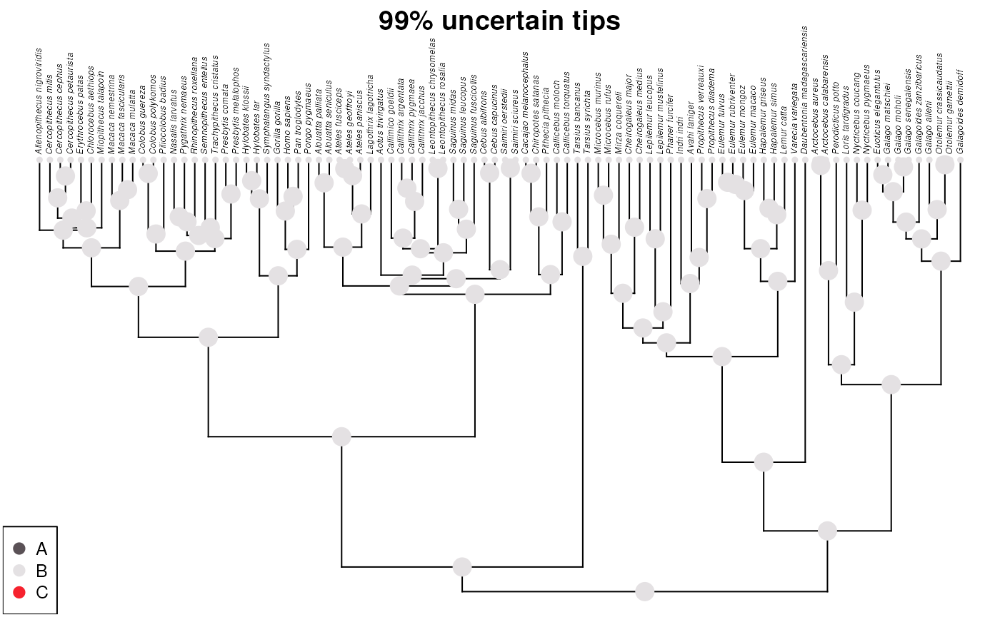
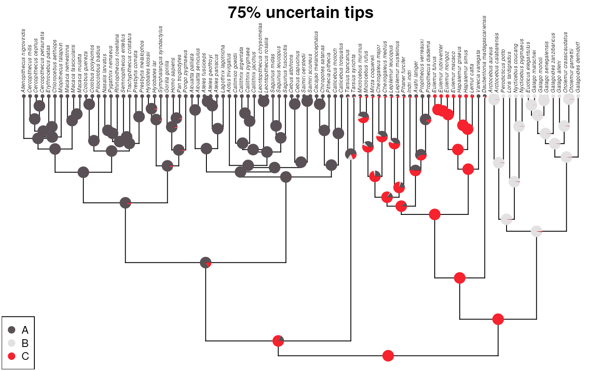

Effect of uncertainty in tip annotations
Multistate-intersection
Source:vignettes/articles/effect_uncertainty_tips.Rmd
effect_uncertainty_tips.Rmd
library(ape)
library(phytools)
#> Loading required package: maps
library(dplyr)
#>
#> Attaching package: 'dplyr'
#> The following object is masked from 'package:ape':
#>
#> where
#> The following objects are masked from 'package:stats':
#>
#> filter, lag
#> The following objects are masked from 'package:base':
#>
#> intersect, setdiff, setequal, union
library(tidyr)Prepare data and tree
data('primate.tree')
data('primate.data')
tree <- primate.tree
data <- primate.data
original <- data |>
tibble::rownames_to_column(var = 'Taxa') |>
select(Taxa, Activity_pattern) |>
mutate(Presence = 1) |>
pivot_wider(
names_from = 'Activity_pattern', values_from = 'Presence',
values_fill = 0
) |>
arrange(Taxa) |>
tibble::column_to_rownames(var = 'Taxa') |>
as.matrix()
colnames(original) <- c(LETTERS[1:3])
myFun <- function(mat, per_uncertain = 0.1) {
n_row <- nrow(mat)
n <- round(n_row * per_uncertain)
rows <- sample(x = 1:nrow(mat), size = n, replace = FALSE)
mat[rows,] <- rep(1/ncol(mat), ncol(mat))
mat
}99% uncertainty
set.seed(1234)
m99 <- myFun(original, 0.99)
m99 <- m99[tree$tip.label,]
fit99 <- fitMk(tree = primate.tree, x = m99,
model = "ARD", pi = "fitzjohn",
lik.func = "pruning", logscale = TRUE)
ace99 <- ancr(fit99, tips=TRUE)
plot(ace99, args.plotTree = list(direction="upwards"))
title(main = '99% uncertain tips', line = -1)
95% uncertainty
set.seed(1234)
m95 <- myFun(original, 0.95)
m95 <- m95[tree$tip.label,]
fit95 <- fitMk(tree = primate.tree, x = m95,
model = "ARD", pi = "fitzjohn",
lik.func = "pruning", logscale = TRUE)
ace95 <- ancr(fit95, tips=TRUE)
plot(ace95, args.plotTree = list(direction="upwards"))
title(main = '95% uncertain tips', line = -1)
75% uncertainty
set.seed(1234)
m75 <- myFun(original, 0.75)
m75 <- m75[tree$tip.label,]
fit75 <- fitMk(tree = primate.tree, x = m75,
model = "ARD", pi = "fitzjohn",
lik.func = "pruning", logscale = TRUE)
ace75 <- ancr(fit75, tips=TRUE)
plot(ace75, args.plotTree = list(direction="upwards"))
title(main = '75% uncertain tips', line = -1)